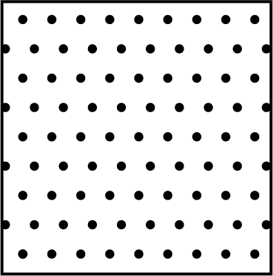
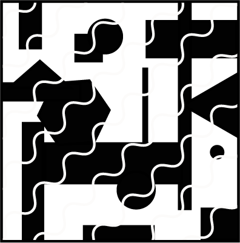

<!DOCTYPE html>
<html>

<head>
    <title>Schloss Lab Experiment</title>
    <!-- Load in the jspsych tools, plugins,and layout -->
    <script src="jsPsych/jspsych.js"></script>

    <script src="jsPsych/jspsych-image-slider-response_InstrMAS.js"></script>
    <script src="jsPsych/plugin-image-slider-response.js"></script>
    <script src="jsPsych/plugin-html-slider-response.js"></script>
    <script src="jsPsych/jspsych-image-slider-responseKM.js"></script>
    <script src="jsPsych/plugin-html-button-response.js"></script>
    <script src="jsPsych/plugin-html-keyboard-response.js"></script>
    <script src="jsPsych/plugin-survey-multi-select.js"></script>
    <script src="jsPsych/plugin-survey-text.js"></script>
    <script src="jsPsych/plugin-fullscreen.js"></script>
    <script src="jsPsych/plugin-preload.js"></script>
    <script src="imagePaths.js"></script>
    <link href="jsPsych/jspsych.css" rel="stylesheet" type="text/css">
    <script src="https://unpkg.com/@jspsych-contrib/plugin-pipe"></script>
    <script src="https://cdnjs.cloudflare.com/ajax/libs/underscore.js/1.13.1/underscore-min.js"></script>

</head>

<body>


    <!--------------------- Here is where the experiment is created ------------------------------------------->
    <script>

        var jsPsych = initJsPsych();
        var timeline = [];


        const subject_id = jsPsych.randomization.randomID(10);
        const filename = `${subject_id}.csv`;


        //SONA

        // Capture the participant ID
        let sona_id = jsPsych.data.urlVariables()['sona_id']


        // Set background color to gray //
        document.body.style.backgroundColor = "rgb(128,128,128)"


        // make a list of all the values in the dict 'textures'
        var image_paths = Object.values(textures);
        // append the string 'patches71.png' to the list
        image_paths.push('visual_textures_anchoring.png');
        console.log(image_paths);
        //Define example image with highlighted section
        highlight_example = "output_D12.png"
        //console.log(affect_list);
        var preload = {
            type: jsPsychPreload,
            images: image_paths
        };
        jsPsych.data.addProperties({
            subject_id: subject_id
        });

        timeline.push(preload);

        // Initial welcome screen
        var initial_screen = {
            type: jsPsychHtmlButtonResponse,
            stimulus: `<div style='text-align:center; font-size:20px; line-height:25px; width: 1200px;'>
                Welcome to our experiment! <br>
                <br>At the bottom of this screen, you will see a button that says 'Begin Experiment.
                <br>Please only click that button when you are ready to complete the 25 minute experiment in one sitting. <br>
                <br> Once you click that button, it will not be possible to restart the experiment. <br><br>`,
            choices: ['Begin Experiment']
        }
        timeline.push(initial_screen);

        timeline.push({
            type: jsPsychFullscreen,
            fullscreen_mode: true,
        })

        var consentSign = {
            type: jsPsychSurveyMultiSelect,
            questions: [
                {
                    prompt:
                        "  <strong>UNIVERSITY OF WISCONSIN-MADISON</strong>" +
                        "  <br><strong>Research Participant Information and Consent Form</strong>" +
                        " <br><br><strong>Title of the Study:</strong> Investigating how observers perceive, interpret, and evaluate visual features in 2D scenes and 3D environments" +
                        " <br><br><strong>Principal Investigator:</strong> Karen B. Schloss (phone: 608-316-4495) (email: kschloss@wisc.edu)" +
                        "  <br><br><strong><u>DESCRIPTION OF THE RESEARCH</u></strong>" +
                        "  <br>You are invited to participate in a research study about how visual features influence the ability to perceive, interpret, navigate, and remember information in visual displays" +
                        "  <br><br>You have been asked to participate because you saw a description of the study and signed up to be a participant." +
                        "  <br><br>The purpose of the research is to understand principles by which people perceive, evaluate and interpret visual information (e.g., the meaning of parts of a scientific diagram)." +
                        "  <br><br>This study will include adults from UW-Madison and nearby areas who volunteer to participate." +
                        "  <br><br>The research will be conducted online, with no requirement to appear in person." +
                        "  <br><br><strong><u>WHAT WILL MY PARTICIPATION INVOLVE?</u></strong>" +
                        "  <br>If you decide to participate in this research you will be presented with visual displays containing images and/or text and will be asked to make judgments about them. For example, you may see shapes and be asked how round they appear or view a graph with a legend and interpret information about the data in the graph." +
                        "  <br><br>You will be asked to respond by making button presses on a keyboard/mouse. You may be asked to complete questionnaires about your expertise or educational level in a given domain (e.g., neuroscience) and questionnaires about what sorts of things you like/dislike. Finally, you may be asked to respond to questions about your experience during the experiment (e.g., how much you enjoyed the task)." +
                        "  <br><br>You will be asked to complete 2-6 surveys or tasks." +
                        "  <br><br>Your participation will last approximately 30-60 minutes per session (as specified when you signed up to participate) and will require 1 session (30 to 60 min total)." +
                        "  <br><br><strong><u>ARE THERE ANY RISKS TO ME?</u></strong>" +
                        "  <br>We don't anticipate any risks to you from participating in this study." +
                        "  <br><br><strong><u>ARE THERE ANY BENEFITS TO ME?</u></strong>" +
                        "  <br>There are no direct benefits for participating in this study." +
                        "  <br><br><strong><u>WILL I BE COMPENSATED FOR MY PARTICIPATION?</u></strong>" +
                        "  <br>Consistent with PSY 202/210/225 policies, you will receive 1 extra credit point/30 minutes of study participation. At the end of the semester, those extra credit points are converted such that 1 point of extra credit = 0.33% added directly to your grade at the end of term. Consult your class syllabus for additional details regarding the application of extra credit points to your final grade." +
                        "  <br><br><strong><u>HOW WILL MY CONFIDENTIALITY BE PROTECTED?</u></strong>" +
                        "  <br>While there will probably be publications as a result of this study, your name will not be used. Typically, group characteristics will be published, but datasets with individual responses may also be shared. In such cases, the data will not be linked to your name or other identifiable information." +
                        "  <br><br><strong><u>WHOM SHOULD I CONTACT IF I HAVE QUESTIONS?</u></strong>" +
                        "  <br>You may ask any questions about the research at any time. If you have questions about the research you can contact the Principal Investigator Karen B. Schloss at 608-316-4495." +
                        "  <br><br>If you are not satisfied with response of research team, have more questions, or want to talk with someone about your rights as a research participant, you should contact the Education and Social/Behavioral Science IRB Office at 608-263-2320." +
                        "  <br><br>Your participation is completely voluntary. If you decide not to participate or to withdraw from the study you may do so without penalty." +
                        "  <br><br>By clicking the box below, you confirm that you have read this consent form, had an opportunity to ask any questions about your participation in this research and voluntarily consent to participate. You may print a copy of this form for your records." +
                        "  <br><br>Please click the box below next to the text 'I consent' to give your informed consent to participate. " +
                        "   </p>",
                    options: ["<strong>I consent</strong>"],
                    horizontal: false,
                    required: true,
                    name: 'Consent'
                },
            ],
            button_label: "Start Experiment",
        };

        timeline.push(consentSign);

        // Overview instructions of experiment
        var overview_instructions = {
            type: jsPsychHtmlButtonResponse,
            stimulus: 'Welcome! <p> This experiment involves two parts: demographic information, followed by the experimental task.' +
                '<p> It will take about 25 minutes to complete both parts.',
            choices: ['Continue']
        }
        timeline.push(overview_instructions);

        var age_lang_demo = {
            type: jsPsychSurveyText,
            questions: [
                { prompt: "Age", name: 'Age', rows: "1", columns: "3", required: true, },
                { prompt: "Gender", name: 'Gender', rows: "1", columns: "15", required: true, },
                { prompt: "Race/ethnicity", name: 'Race/ethnicity', rows: "1", columns: "30", required: true, }
            ],
            preamble: "Please answer the following questions.",
            button_label: "Done",
            randomize_question_order: false
        }
        timeline.push(age_lang_demo);

        var uniformity = {
            type: jsPsychHtmlButtonResponse,
            stimulus: `
        <div style="width:100%; display:flex; justify-content:center; align-items: flex-start; height: auto; flex-direction: column; margin-top: 80px; margin-bottom: 50px;">

            <!-- Centered Header Text -->
            <div style="width:1200px; text-align:left; font-size:24px; margin-top:-250px; margin-left: 80px;">
                During this experiment, you will be presented with images of textures.
            </div>

            <!-- First Row: Uniform Textures -->
            <div style="width:1200px; text-align:left; font-size:24px; margin-top: 50px; margin-bottom: 10px;">
                <div style="display: flex; justify-content: flex-start; align-items: center;">
                    <span style="width:45%; margin-left: 80px; margin-right: 20px;">
                        Some of the textures will appear very 'uniform,' which means they appear similar across the whole image. 
                        The textures to the right are examples of very uniform texture.
                    </span>
                    
                    
                </div>
            </div>

            <!-- Second Row: Non-Uniform Textures -->
            <div style="width:1200px; text-align:left; font-size:24px; margin-top: 50px; margin-bottom: 10px;">
                <div style="display: flex; justify-content: flex-start; align-items: center;">
                    <span style="width:45%; margin-left: 80px; margin-right: 20px;">
                        Some of the textures will appear very 'non-uniform,' which means they look different in different parts of the image. 
                        The textures to the right are examples of very non-uniform textures.
                    </span>
                    
                    
                </div>
                </div>
        `,
            choices: ['Continue'],
        }

        timeline.push(uniformity);


        var instructions = {
            type: jsPsychHtmlSliderResponse,
            stimulus: `
                <div style='text-align:left; height: auto; margin-left=-100px; margin-bottom: -20px; font-size:20px; line-height:25px; width: 1200px;'>
                    <br>During this experiment, you will see a series of textures, one at a time, like the ones below. 
                </div>
                    <br>
                    <br>
                    
                </div>
                <div style="clear: both;"></div>
                </div>
                    <div style='text-align:left; margin-left=-100px; font-size:20px; line-height:25px; width: 1200px; margin-top: -50px;'>
                    <br> Your task is to rate how uniform the texture appears on a scale from 'not at all uniform' to 'very much uniform,' like the one below.
                    <br><br> So you know what 'very much uniform' and 'not at all uniform' means to you in the context of these textures, please think about which textures below you consider 'very much uniform,' and which textures below you consider 'not at all uniform.'
                    <br><br>When you see a texture during the experiment that you consider 'very much uniform', please rate it near the 'very much uniform' endpoint of the
                    scale.<br><br> When you see a texture during the experiment that you consider 'not at all uniform', please rate it near the 'not at all uniform' endpoint
                    of the scale.<br><br>
                    Please use the full range of the scale. That is, if an texture is somewhat uniform, you would
                    click partway between the middle point and right side of the scale.\
                    You will be asked to rate each texture on its uniformity.<br><br>Press the
                    'Continue' button for instructions on how to use the slider.\
                     <br><br>
                `,
            labels: ['Not at all <br> uniform', 'Very much <br> uniform'],
            require_movement: false,
            step: 1,
            slider_start: 0,
            min: -200,
            max: 200,
            response_ends_trial: false,
            include_button: true,
            data: {
                image_path: 'visual_textures_anchoring.png',
                practiceTrial: true,
            },
            slider_width: 500,

        };

        timeline.push(instructions);

        //instructions on how the slider may be moved
        var slider_instructions = {
            type: jsPsychHtmlButtonResponse,
            stimulus: `<div style="width:1200px; margin-top:-150px;"><p style="text-align:center; font-size:24px;">To move the slider, click and drag your cursor to the location of the scale where you would like to make your rating and then let go. <br><br> When you let go of the slider, your response will be recorded and the next trial will begin. <br><br><br>
                We are interested in your initial impressions of each image's uniformity, so please go with your first intuition. <br><br>
                Before you begin the experiment, there will be four training trials for you to practice using the scale. <br><br><br><br></div>
                <div style="width:1200px;"><p style="text-align:center; font-size:20px;">When you are ready to start the training trials, please click "Continue".</p></div>`,
            choices: ['Continue']
        }


        timeline.push(slider_instructions);
        //console.log(affect_list)
        //affect_list = jsPsych.randomization.shuffle(affect_list);
        for (i = 0; i < 4; i++) {
            //let practice_concept = affect_list[0];
            let task
            if (i == 0) {
                task = "Please move the slider all the way to the <br> right endpoint of the scale"
            }
            else if (i == 1) {
                task = "Please move the slider all the way to the <br> left endpoint of the scale"
            }
            else if (i == 2) {
                task = "Please move the slider halfway between the center and right endpoint of the scale"
            }
            else if (i == 3) {
                task = "Please move the slider halfway between the center and left endpoint of the scale"
            }
            var rating_trial = {
                type: jsPsychHtmlSliderResponse,
                stimulus: `<div style="width:500px;">
                                <p style="font-size:25px;">${task}</p>

                                </div>
                            </div>`,
                labels: ['Not at all <br> uniform', 'Very much <br> uniform'],
                // slider_width: 500,
                require_movement: false,
                step: 1,
                slider_start: 0,
                min: -200,
                max: 200,
                response_ends_trial: true,
                post_trial_gap: 500,
                data: {
                    //  image_path: maps[i],
                    //  concept: practice_concept,
                    practiceTrial: true,
                    practiceTrialNum: i
                },
                on_finish: function (data) {
                    var slider_response = data.response;
                    var trialNum = data.practiceTrialNum;
                    let upperLimit;
                    let lowerLimit;
                    if (trialNum == 0) {
                        upperLimit = 220;
                        lowerLimit = 180;
                    }
                    else if (trialNum == 1) {
                        upperLimit = -180;
                        lowerLimit = -220;
                    }
                    else if (trialNum == 2) {
                        upperLimit = 110;
                        lowerLimit = 80;
                    }
                    else if (trialNum == 3) {
                        upperLimit = -80;
                        lowerLimit = -110;
                    }
                    console.log(slider_response)
                    console.log(upperLimit, lowerLimit)
                    if (slider_response <= upperLimit && slider_response >= lowerLimit) {
                        data.correct = true;
                    }
                    else {
                        data.correct = false;
                    }
                }

            };


            var rating_feedback = {
                type: jsPsychHtmlButtonResponse,
                stimulus: function () {
                    var last_resp_correct = jsPsych.data.getLastTrialData().values()[0].correct;
                    if (last_resp_correct) {
                        return "<p align='center'><b>Good job!</b> Click on 'Continue' to proceed.</p>"
                    } else {
                        return "<p align='center'><b>Not quite!</b> The slider was not placed near the instructed located. Click on 'Continue' to try again. </p>"
                    }
                },
                choices: ['Continue']
            };

            var comp1_loop = {
                timeline: [rating_trial, rating_feedback],
                loop_function: function (data) {
                    console.log('data: ', data.values());
                    if (data.values()[0].correct == true) {
                        return false;
                    } else {
                        return true;
                    }
                }
            };
            timeline.push(comp1_loop);
        }

        var practice_complete = {
            type: jsPsychHtmlButtonResponse,
            stimulus: `<div style="width:800px; margin-top:-300px;"><p style="text-align:center; font-size:22px; line-height:25px;""> Great job! You've completed the practice trials.</div>
                     <div style="width:800px; margin-top:-20px;"><p style="text-align:center"><br><br> In the following trials, you will be asked to rate images on their uniformity one-by-one. <br> You will be given an oprtunities to take breaks when you have completed 25%, 50% and 75% of the trials. <br><br> Please click continue to begin the main task.<br><br><br> </div>`,
            choices: ['Continue']
        };
        timeline.push(practice_complete);


        //Define texture order for each block
        var texture_order_1 = jsPsych.randomization.sampleWithoutReplacement(_.range(Object.keys(textures).length), Object.keys(textures).length);
        var texture_order_2 = jsPsych.randomization.sampleWithoutReplacement(_.range(Object.keys(textures).length), Object.keys(textures).length);


        // Define how many trials should be in each block
        var trials_per_block = Object.keys(textures).length;

        // Block 1

        // Define break messages
        var break_message_1 = "You have completed 25% of the trials. Please click 'Continue' when you are ready proceed.";

        for (j = 0; j < texture_order_1.length; j++) {

            var this_texture = textures[texture_order_1[j]];
            // Define concept based on current exemplar
            //var concept = affect_list[i];
            var rating_trial = {
                type: jsPsychHtmlSliderResponse,
                stimulus: `<div style="width:500px;">
                                <p style="font-size:50px; font-weight:bold;"
                                ></p>
                                <div style="width:240px; margin: auto;">
                                    
                                </div>
                            </div>`,
                labels: ['Not at all <br> uniform', 'Very much <br> uniform'],
                slider_width: 500,
                require_movement: false,
                step: 1,
                slider_start: 0,
                min: -200,
                max: 200,
                response_ends_trial: true,
                post_trial_gap: 500,
                data: {
                    image_path: this_texture,
                    //concept: concept
                }

            };

            timeline.push(rating_trial);


            // Insert break halfway through the block 1 trials
            if (j === Math.floor(trials_per_block / 2) - 1) {
                var break_trial_1 = {
                    type: jsPsychHtmlButtonResponse,
                    stimulus: break_message_1,
                    choices: ['Continue'],
                };
                timeline.push(break_trial_1);
            }
        }

        //Halfway - break 2

        var break2 = {
            type: jsPsychHtmlButtonResponse,
            stimulus: "You have completed 50% of the trials. Please click 'Continue' when you are ready proceed.",
            choices: ['Continue']
        };

        timeline.push(break2);

        // Block 2

        // Define break messages
        var break_message_3 = "You have completed 75% of the trials. Please click 'Continue' when you are ready proceed.";

        for (j = 0; j < texture_order_2.length; j++) {

            var this_texture = textures[texture_order_2[j]];
            // Define concept based on current exemplar
            //var concept = affect_list[i];
            var rating_trial_check = {
                type: jsPsychHtmlSliderResponse,
                stimulus: `<div style="width:500px;">
                                <p style="font-size:50px; font-weight:bold;"
                                ></p>
                                <div style="width:240px; margin: auto;">
                                    
                                </div>
                            </div>`,
                labels: ['Not at all <br> uniform', 'Very much <br> uniform'],
                slider_width: 500,
                require_movement: false,
                step: 1,
                slider_start: 0,
                min: -200,
                max: 200,
                response_ends_trial: true,
                post_trial_gap: 500,
                data: {
                    image_path: this_texture,
                    //concept: concept
                }

            };

            timeline.push(rating_trial_check);


            // Insert break halfway through the block 2 trials
            if (j === Math.floor(trials_per_block / 2) - 1) {
                var break_trial_3 = {
                    type: jsPsychHtmlButtonResponse,
                    stimulus: break_message_3,
                    choices: ['Continue'],
                };
                timeline.push(break_trial_3);
            }
        }


        const save_data = {
            type: jsPsychPipe,
            action: "save",
            experiment_id: "uiwSce8sNnbJ",
            filename: filename,
            wait_message: 'Please wait a moment while the next page loads.',
            data_string: () => jsPsych.data.get().csv(),
            on_finish: (data) => {
                console.log("Data saved:", data);
            }
        };

        timeline.push(save_data);

        // Final message at the end of the experiment
        var debrief_script = {
            type: jsPsychHtmlButtonResponse,
            stimulus: `
            <div style='text-align:center; margin-left=-100px; font-size:20px; line-height:25px; width: 1200px;'>Great Job! You're done rating all textures!<br></br>
                <br> The goal of this study is to understand how people form associations between visual textures and concepts.
                <br> To do this, we need to collect data on how people view the uniformity of textures.
                <br> Please do not inform other potential participants of the hypotheses in our experiment.
                <br> Please click 'Next' in order to receive credit through sona. <br><br> </div>`,
            choices: ['Next'],
        };

        timeline.push(debrief_script);

        //spot for debrief

        var thank_you = {
            type: jsPsychHtmlKeyboardResponse,
            stimulus: `<div style="width:800px"> Thank you!
                <br><br>Credit for your participation will appear on SONA in the next few days.
                <br><br> You may press the 'esc' key to end the experiment and exit full screen.`,
            choices: 'ALL_KEYS',
            on_finish: function () {
                const sonaRedirectURL = `https://yourschool.sona-systems.com/webstudy_credit.aspx?experiment_id=[EXPERIMENT_ID]&credit_token=[CREDIT_TOKEN]&survey_code=${getSurveyCode()}`;
                window.location.href = sonaRedirectURL;
            }
        }

        timeline.push(thank_you);

        timeline.push({
            type: jsPsychFullscreen,
            fullscreen_mode: false,
        })


        jsPsych.run(timeline, {
            on_finish: function () {
                // Redirect to Sona's completion URL with the sona_id for credit
                window.location.assign("https://uwmadison.sona-systems.com/webstudy_credit.aspx?experiment_id=1652&credit_token=ea076512702d447d87e368a354e37fd9&survey_code=" + sona_id);
            }
        }
        );


    </script>
</body>

</html> 